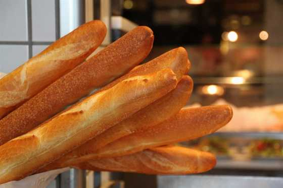
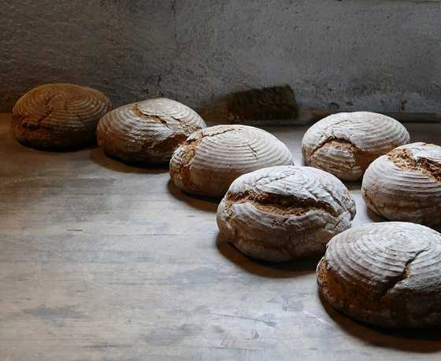
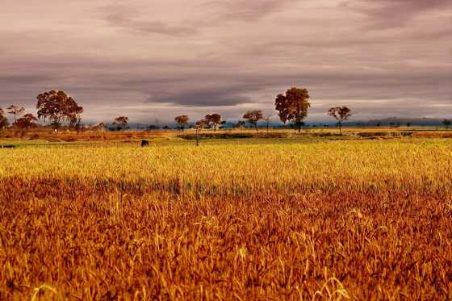

ABOUT
お店の由来と想い
店主は青森県出身。地元でおよそ8年パン作りの腕を磨き、結婚を機に秋田へ。秋田市のパン屋で働きながら、休日は各地のイベントに出店していました。
お店があるのは、奥さまの祖父母の家。長く大切にされてきた家をそのまま残したいという思いから、この場所で開業したと紹介されています。開店を支えてくれた人たちに「恩返し」のつもりで焼きたい、というのが店主の言葉です。
- 7~8種類の粉と4~5種類の製法を組み合わせて、目指す味に近づける
- 看板は、3日がかりの「全粒粉のカンパーニュ」と、国産バターをたっぷり使ったクロワッサン
- ハード系から甘いパンまで約20種類
- 2025年11月13日オープン
※ 屋号「麦野」の意味は確認できていません。出典は秋田タウン情報の取材記事ほか。

BREAD
パンのこと
取材記事に載っていたパンと価格です(変更の可能性があります。最新はInstagramでご確認ください)。








VOICE
口コミ(イメージ例)
イメージ例
ハード系のパンの種類が多くて、どれにするか迷いました。噛むほどに粉の味がします。
イメージ例
静かな集落の古いお家という雰囲気がいい。ドライブの途中に立ち寄りたくなります。
イメージ例
クロワッサンはバターの香りがしっかり。早めの時間に行くのがおすすめです。
制作側が創作した例で、実在のお客様の声ではありません。
ACCESS
アクセス・ご案内
| 所在地 | 〒010-0684 秋田県男鹿市北浦安全寺安全寺102 |
|---|---|
| 電話 | 準備中 |
| 営業時間 | 10:00~15:00(取材記事より。変更の可能性あり) |
| 定休日 | 月・火・金曜(取材記事より) |
| 駐車場 | あり(取材記事より) |
| @mugino_ro |